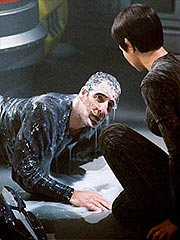
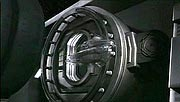
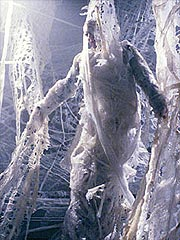
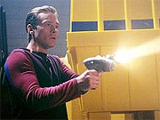
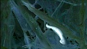
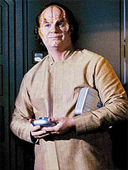
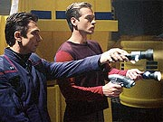
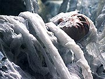
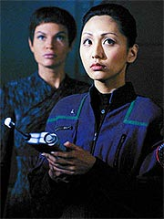

Episódio
anterior | Próximo
episódio
Sinopse:
A Enterprise está recebendo a
bordo um grupo de Kreetassans para uma missão de primeiro
contato, mas as coisas não estão indo bem. Há muita dificuldade
de comunicação com os alienígenas e eles subitamente se sentem
ofendidos com alguma coisa e decidem partir. Quando sua nave está
se soltando, uma criatura desconhecida consegue entrar pela porta
de atracação, sem que alguém na Enterprise percebesse.

Archer está
muito irritado com o fracasso, assim como Hoshi Sato. A oficial de
comunicações se sente culpada pela falta de diálogo com os
alienígenas, e T'Pol parece apenas reforçar essa sensação.
Tucker quer aliviar as coisas para o capitão e decide convidá-lo
para acompanhar uma partida das finais do campeonato de pólo aquático
--o esporte favorito de Archer--, recém-transmitida pelos canais
subespaciais.
Enquanto os dois compartilham do jogo juntos, Reed, Mayweather e
Hoshi estão jantando no refeitório, discutindo a possibilidade
de irem acompanhar o filme da noite no auditório. Hoshi, ainda
chateada pelos eventos, decide se recolher mais cedo, mas Reed
aceita o convite, após Travis prometer que o filme seria bem
explosivo.
Entretanto, o sistema de vídeo parece não estar funcionando bem.
Da mesma maneira, o pessoal da engenharia detecta um problema no
deck D e despacha um tripulante para resolvê-lo. Chegando ao
compartimento de carga, o tripulante encontra a criatura, que logo
o envolve, sem dar a chance de ele avisar seus colegas da
engenharia do perigo. Quando outra oficial vai atrás dele, ela
também é capturada, mas não sem antes conseguir transmitir um
aviso ao capitão.

De
sobressalto, Archer e Tucker deixam o jogo para investigar o que
está havendo, juntamente com Reed e outro oficial. Quando chegam
lá, descobrem os dois tripulantes da engenharia presos e
suspensos por uma rede de tentáculos. Um deles tenta avisar ao
capitão para fugir, mas não com a rapidez suficiente, e logo
Archer, Tucker e o terceiro oficial também são capturados pela
criatura. Apenas Reed consegue fugir, fechando a porta por sobre
dois tentáculos e arrancando um pedaço de um deles.
O tecido é levado para análise na enfermaria. Phlox estuda a
criatura e identifica nela uma complexa rede nervosa, indicando
provavelmente alto nível de consciência. Hoshi imediatamente
acredita que a solução para libertar os oficiais é se
comunicando com a criatura, mas Reed aponta que levaria muito
tempo para estabelecer um diálogo compreensível, tempo que eles
não podem se dar ao luxo de perder. Alternativamente, o oficial
de armamentos quer de algum modo tontear a criatura. Phlox aponta
que ela é fotossensível, e que um pulso bem modulado de luz
poderia colocá-la para dormir. T'Pol ordena que Mayweather
procure os Kreetassans, na esperança de que eles saibam algo
sobre a criatura, e opta pela sugestão de Reed, que imediatamente
trabalha no sistema que deveria imobilizar a criatura.

Quando posta em
prática, a solução começa funcionando, mas logo o sofrimento
pelo qual passa a criatura começa transferido aos oficiais
capturados. Phlox aponta que ela está estabelecendo elos neurais
com os tripulantes. Prosseguir com aquela estratégia
provavelmente mataria Archer e os outros antes mesmo de tontear a
criatura. O procedimento é então interrompido, e Hoshi deve
agora buscar a opção alternativa --comunicar-se com a criatura.
Ela começa trabalhando nas vibrações do ser, mas não consegue
traduzir. Como eles exibem padrões altamente matemáticos, ela
pede a ajuda de T'Pol. Enquanto isso, Reed está preocupado com a
segurança da nave. Com a autorização da primeiro-oficial, ele
começa a desenvolver um campo de força experimental, o primeiro
do tipo, para conter a criatura na área de carga. Ele quer fazer
experimentos com o pedaço do ser mantido na enfermaria, para
determinar a frequência de seu campo de força, mas Phlox o
impede, pelo fato de o membro solto apresentar características de
um ser inteligente e individual. Isso acaba atrasando um pouco o
desenvolvimento do sistema de contenção.
Na ponte, Mayweather finalmente é contatado pelos Kreetassans.
Eles dizem conhecer a criatura, que já viram em um planeta próximo.
Segundo os alienígenas, esse ser deve ter sido transportado no
casco da nave deles, sem que eles soubessem. Mayweather pede as
coordenadas para o planeta da criatura, mas os Kreetassens só
concordam depois que o oficial pede desculpas pelo mal-entendido
que havia ocorrido antes. Todo o problema havia surgido quando
Tucker comeu alguma coisa --para os Kreetassans, comer é uma
atitude extremamente reservada, como praticar sexo.

De
posse das coordenadas, Travis marca curso para o planeta. Enquanto
isso, o tempo passa e os tripulantes capturados estão cada vez
mais integrados com a criatura. Logo, será impossível separá-los,
conclui Phlox. Reed conclui os trabalhos com seu campo de força,
que se mostra importante para conter a criatura, enquanto Hoshi
tenta seu melhor esforço para se comunicar com a criatura. Usando
tons harmônicos que representam relações matemáticas, ela
consegue transmitir idéias simples. A criatura passa coordenadas
de latitude e longitude relativas a seu planeta-natal, e Hoshi
comunica que a Enterprise irá levá-la para casa. Depois disso, a
criatura liberta os oficiais.
Um grupo de descida leva a criatura de volta a seu habitat, onde
ela se integra a uma enorme rede semelhante a ela, que, segundo
T'Pol, tem leituras de uma só criatura. Resta à Enterprise
partir, seguindo para sua próxima missão.
Comentários:
Uma coisa a audiência não poderá reclamar de "Vox
Sola" --o episódio certamente representa tudo que os
produtores prometeram, em termos da premissa original de Enterprise.
Com uma trama básica que poderia facilmente descambar para um
desastre, Fred Dekker consegue produzir um roteiro bastante
interessante, que mais uma vez traz à tona algumas das qualidades
mais marcantes da série.
Assim como em outros segmentos memoráveis do primeiro ano (como "Fight
or Flight" e "Dear
Doctor"), temos aqui uma boa amostra de como é a
vida para um tripulante da Enterprise. Melhor até do que nos
segmentos anteriores nesse aspecto, o episódio consegue
desenvolver a rotina não só para os personagens principais, mas
também para alguns dos tripulantes figurantes.

Novas relações
de camaradagem brotam aqui, como a entre Reed e Mayweather. Aliás,
diga-se de passagem, já é o segundo episódio seguido em que os
roteiristas fazem bom uso do piloto da nave. Ao que parece,
lentamente, a equipe está encontrando a voz, o tom e o papel de
Travis entre os sete principais personagens da série.
Reed continua com uma sólida e interessante caracterização. E
é difícil não apreciar a personalidade literalmente explosiva
do oficial. Suas atitudes extremamente incisivas favorecem a
qualidade dos diálogos. Quando Dekker junta Reed e Phlox, outro
personagem extremamente bem desenvolvido, para uma discussão ética,
a combinação é excepcional. Tanto Dominic Keating como John
Billingsley conseguem mostrar muito bem o valor e a importância
de seus personagens na série.
Na outra ponta da equação, Hoshi e T'Pol dão mais um passo para
iniciar uma relação amistosa. Embora não rendam tão bem quanto
o armeiro e o doutor da Enterprise, as duas mostram uma boa química
juntas, e o relacionamento parece fluir naturalmente. Ele foi
beneficiado pelo tratamento adequado que T'Pol recebeu aqui, sem
os exageros que têm marcado algumas de suas participações.
A cena que envolve Tucker, Archer e o pólo aquático não faz
muito pelos dois personagens, exceto confirmar a amizade que já
conhecemos existir ali. Apesar disso, é reconfortante ver a dupla
tomando cerveja e assistindo a uma competição esportiva (embora
pólo aquático não tenha sido uma escolha particularmente
interessante para o esporte favorito do capitão). Mais uma vez,
é a premissa da série se fazendo notar, em aspectos sutis.

De uma
forma geral, esses relacionamentos a bordo respondem por uma das
promessas dos produtores --desenvolver seus personagens o mais
possível. Aqui, todos recebem um tempo decente de tela e situações
importantes com que lidar. Ajudou também "trancafiar"
Tucker, Archer e mais três "camisas vermelhas" na teia
da criatura, permitindo que os demais pudessem brilhar.
(Aliás, sobre os "camisas vermelhas", é notável como
os produtores estão resistindo em matar figurantes. Um bom sinal,
depois de sete anos de tripulantes recicláveis em Voyager.
Resta saber quando ocorrerá o "histórico evento" da
morte do primeiro "camisa vermelha".)
Felizmente, a outra promessa da série --mostrar a infância da
Frota Estelar e da exploração humana pelo cosmos-- não foi
esquecida, e há muito dela no que vemos aqui. Só para citar um
exemplo, o "histórico evento" da invenção do primeiro
campo de força eletromagnético surge neste segmento, graças a
Malcolm Reed.

Além disso,
temos um primeiro contato mal-sucedido, por mera inexperiência ou
falta de entendimento. Embora vez por outra isso tenha surgido em Jornada,
é algo que cai muito melhor na premissa de Enterprise do
que em qualquer outra série.
Depois, a perspectiva de que tudo é novo e assustador para Archer
e seus tripulantes. Certamente a criatura que vemos aqui é
assustadora --pelo menos no roteiro. A execução das cenas,
principalmente as que não envolvem CGI mas apenas os tripulantes
presos em um monte de papel higiênico molhado, deixou um pouco a
desejar. Quando Archer e cia. "sofrem as dores" da
criatura, não pude evitar uma gargalhada involuntária.
Apesar disso, em termos conceituais, a coisa toda é bem
interessante. Quem costuma reclamar da velha reciclagem dos
"alienígenas da semana", não pode reclamar do
protagonista de "Vox Sola". Principalmente quando
ainda temos a chance de visitar o planeta natal dessa forma de
vida e ver um panorama do que realmente pode ser uma criatura
alienígena, em todos os sentidos do termo. Certamente é o tipo
de coisa que reforça a idéia de que é possível fazer exploração
com novidades não só para os tripulantes da Enterprise, mas para
a audiência também. Se houvesse um ícone para o conceito de
"explorar novas vidas", certamente seria algo parecido
com o que vimos aqui --em grande parte proporcionado pela incrível
ferramenta criativa que CGI pode ser, quando bem utilizada.

O
resultado é particularmente notável, tendo em vista a
possibilidade enorme que esse episódio tinha de se tornar um
daqueles no estilo "monstro da semana". Os méritos vão
todos para Rick Berman, Brannon Braga e Fred Dekker, que
conseguiram bem se manter na fronteira entre o assustador e o
interessante, sem descambar para o ridículo (com exceção dos já
referidos problemas de execução).
Um exemplo dessa tênue linha é visto na forma como Hoshi Sato
consegue se comunicar com a criatura. Em primeiro lugar, não
chegamos a realmente obter um entendimento da linguagem ou do
raciocínio do bicho. Nos contentamos apenas com mensagens e
conceitos simples, o que faz com que a magia de encontrar uma
forma de raciocinar totalmente alienígena se mantenha, mesmo com
o estabelecimento do contato. Essa idéia é reforçada pelo uso
interessante de comunicação por música, bem ao estilo de
"Contatos Imediatos do Terceiro Grau".
Sato aqui tem muito mais mérito e credibilidade do que em "Fight
or Flight", sua experiência anterior em salvar o dia
para a Enterprise falando com alienígenas que ninguém entende.
Naquela ocasião, os Axanar e sua linguagem eram só mais uma na
miríade de raças de Jornada. Aqui, encontramos uma forma de vida
singular, e o desafio da comunicação com ela é tratado de
maneira muito mais interessante e verossímil (claro, no fundo,
tudo acontece muito rápido para ser real, mas o tratamento geral
é bem concebido).
Apesar dessas qualidades, ainda assim o episódio não atinge o
brilhantismo, por estar preso a um enredo que se desenrola
majoritariamente numa área de carga (para variar mal iluminada) e
que não tem muita ação boa parte do tempo, com várias cenas de
atores falando uns com os outros pendurados em um monte de gosma.
Isso realmente não ajuda, e, olhando desse ponto de vista, Roxann
Dawson fez até um bom trabalho para não tornar o episódio
excessivamente cansativo em termos visuais.

Mas os valores de
produção mais altos do segmento estão com os espetaculares
efeitos especiais de computador e a trilha sonora. O uso da
orquestração aqui dá um tom bastante interessante,
especialmente nas cenas que envolvem a criatura. Temos a predominância
de violinos, um evento raro nas trilhas da série e uma bela mudança
de ares trazida pelo músico Paul Baillargeon.
No final das contas, "Vox Sola" não se trata de
um episódio pelo qual as pessoas vão se apaixonar perdidamente.
Mas certamente é um sopro de vida e inovação no franchise, o
que, por si só, é uma boa notícia.
Citações:
Tucker - "Well,
this is one for the books: briefest first contact."
("Bem, essa é uma para os livros: primeiro contato mais rápido.")
Mayweather - "Are you staying for the movie tonight?"
("Você vai ficar para o filme hoje à noite?")
Reed - "What's playing?"
("O que vai passar?")
Mayweather - "'Wages of Fear'. Classic French film."
("'Wages of Fear'. Filme clássico francês.")
Reed acena negativamente
Mayweather - "No, you'll like it. Things blow up."
("Não, você vai gostar. Coisas explodem.")
Reed - "Humm. Sounds fun."
("Humm. Parece legal.")
Phlox - "If you want information to help you construct
your force field, you'll acquire it under my supervision."
("Se você quer informação para ajudá-lo a construir seu
campo de força, você irá obtê-la sob minha supervisão.")
Reed - "I'm sure I don't have to remind you, doctor. I am
the ranking officer."
("Estou certo de que não tenho de lembrá-lo, doutor. Eu sou
o oficial mais graduado.")
Phlox - "Not in my sickbay."
("Não na minha enfermaria.")
Tucker - "When Zefram Cochrane talked about new life and
new civilizations, do you think this is what he meant?"
("Quando Zefram Cochrane falou de novas vidas e novas
civilizações, você acha que é isso que ele tinha em
mente?")
Trivia:
 A saga de Vaughn Armstrong em Enterprise segue. Ele acumula
mais um papel na série, além de já ter feito o almirante
Forrest e um capitão Klingon. Em "Vox Sola" ele
faz seu 11º personagem em Jornada nas Estrelas.
A saga de Vaughn Armstrong em Enterprise segue. Ele acumula
mais um papel na série, além de já ter feito o almirante
Forrest e um capitão Klingon. Em "Vox Sola" ele
faz seu 11º personagem em Jornada nas Estrelas.
Joseph Will interpretou Kelis, em "Muse", e um
segurança, em "Workforce, Part II", ambos de
Voyager.
Em uma convenção, Dominic Keating revelou que Scott Bakula e
Connor Trinneer ficaram pendurados por horas, durante vários
dias, em uma "coisa gosmenta branca" enquanto o episódio
era filmado.
Quem apreciou o esforço da dupla foi a diretora Roxann Dawson.
"Eu realmente preciso tirar o chapéu para Scott e Connor,
que passaram dias suspensos por cabos cobertos em gosma sem uma única
reclamação. Eles foram capazes de, de algum modo, manter seus
senso de humor sob essas circunstâncias extremas", disse.
Foi complicado dirigir o episódio, disse Dawson. "Esse episódio
foi difícil, desafiador e... bem, em momentos cheguei a pensar
que era quase impossível. Tínhamos de criar um organismo alienígena
que cresce e toma conta da área de carga, agarrando alguns dos
tripulantes em sua teia. Como você cria essa criatura, torna-a crível
e a faz assustadora?"
Malcolm Reed inventa o primeiro campo de força de energia, um
feito em que a Frota Estelar da Terra já trabalhava há cinco
anos, sem sucesso.
O episódio originalmente se chamava "Vox Solis"
("voz do Sol", em latim), mas foi trocado de última
hora para "Vox Sola" ("voz solitária"),
que, diga-se de passagem, faz muito mais sentido.
Ficha
técnica:
História de Rick Berman
& Brannon Braga &
Fred Dekker
Roteiro de Fred Dekker
Direção de Roxann
Dawson
Exibido em 01/05/2002
Produção:
022